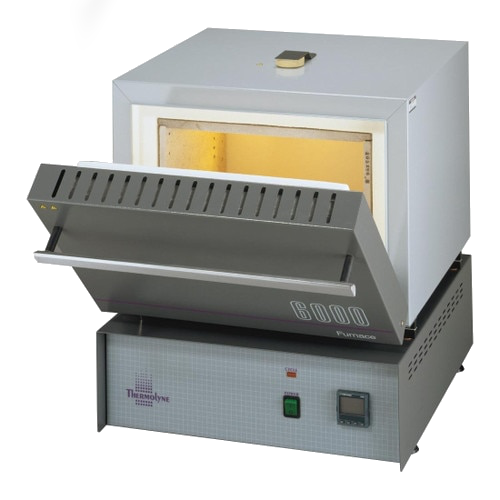

Thermo Scientific Thermolyne™ F6020C-33 Muffle

| Thermo Scientific Thermolyne™ F6020C-33 Muffle | |
|---|---|
| Location: | Lab. 2.58 Building 7 |
| Manager: | Margarida RamiresRodrigo Borges |
| Operator: | User |
| Working Principle: | Oven |
| Manufacturer: | ThermoFisher Scientific |
| Model: | Thermolyne™ F6020C-33 |
| Type: | Muffle |
| Website: | ThermoFisher Scientific |
The Thermo Scientific™ Thermolyne™ F6020C-33 is a high-temperature electric muffle furnace designed for heat treatments, calcination, incineration, ash determination, and sample preparation in the laboratory. The equipment provides uniform heating through heating elements distributed along the chamber walls, ensuring excellent thermal stability and reproducibility of tests.
Equipped with a programmable digital controller with ramp and dip functions, the muffle furnace allows for controlled heating and maintenance of constant temperatures for defined periods, making it suitable for laboratory protocols requiring precise heat treatments. The system also incorporates safety mechanisms such as overheat protection and automatic power interruption to the heating elements when the door is opened.
Calendar / Availability
RequestMain Applications
- Ash determination (Ashing);
- Sample calcination;
- Thermic treatments;
- Gravimetry;
- High temperature drying;
- Sample preparation for analysis;
- Thermic stability studies;
Technical Specifications:
| Specification | Value |
|---|---|
| Manufacturer | Thermo Scientific™ |
| Model | Thermolyne™ F6020C-33 |
| Maximum Operating Temperature | 1200 °C |
| Temperature Range | 100 — 1200 °C |
| Temperature Controller | Digital with ramp and dwelling programmation |
| Volume | 14 L |
| Heating Elements | 4 elements (top, back e lateral) |
| Thermic Uniformity | ±4,5 °C a 1000 °C |
| Thermic Stability | ±1,5 °C a 1000 °C |